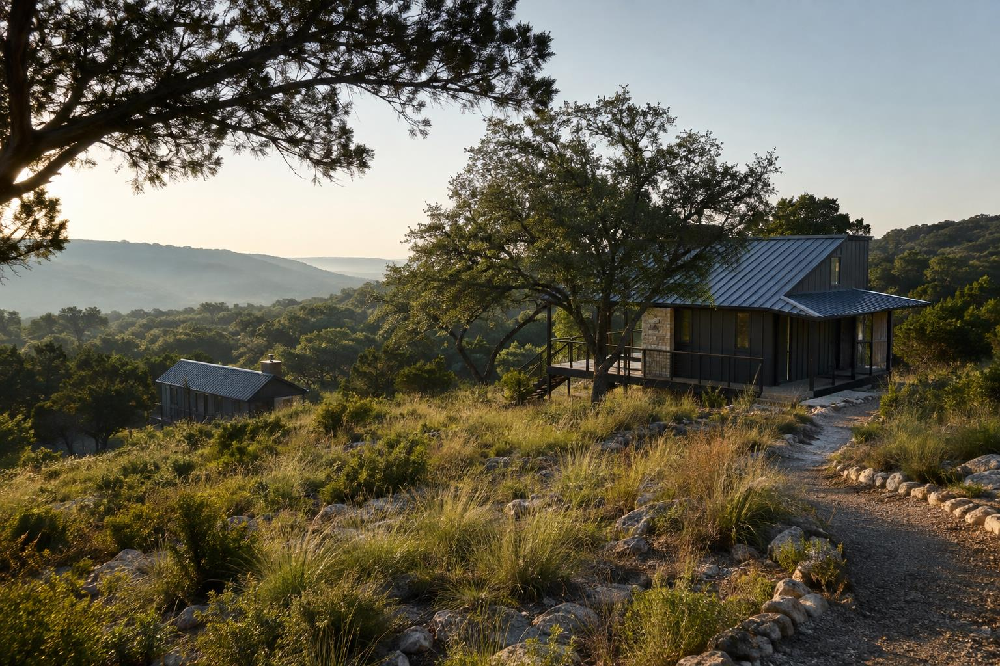

Nature Should Be Your First Amenity
Why the best outdoor hospitality projects start with the land.

The land should shape the guest experience and the construction plan from the beginning.
Outdoor hospitality projects often make their first expensive mistake before construction begins: they treat raw land as something to clear instead of something to understand.
The conventional development playbook is familiar. Draw the highest-yield layout, flatten the difficult areas, install enough drainage to control the runoff, and landscape what is left. That approach may create a clean plan on paper, but in outdoor hospitality it can erase the exact character guests are traveling to experience. It can also create avoidable earthwork, drainage, retaining, irrigation, and long-term maintenance costs.
At Ten Point, we look at the land as part of the infrastructure and part of the product. Existing grades, mature trees, natural drainage paths, rock formations, views, and native plant communities all have value. The goal is not to leave a property untouched. The goal is to disturb it intentionally, protect what creates value, and spend construction dollars where they actually improve safety, access, durability, and the guest experience.
Preserve what creates guest value, engineer what the site truly needs, and make those decisions before the plan is locked.
The Land Is Doing More Work Than It Gets Credit For
People sometimes hear "nature-first" and assume it is a design preference. It is more practical than that. A healthy site is already performing jobs that affect the project budget and the operating plan.
- Drainage and water movement. Natural swales, depressions, soils, and vegetation slow and direct stormwater. They do not replace proper engineering, but understanding them early can reduce unnecessary grading and help the civil plan work with the site.
- Shade and microclimate. Mature canopy reduces direct solar exposure and makes outdoor areas more comfortable. Thoughtful building orientation and preserved shade can also reduce heat load and improve how guests use decks, paths, and common areas.
- Privacy and sound control. Existing vegetation and topography create separation between units, soften noise, and protect sightlines. Those qualities support better reviews, repeat stays, and rate integrity more effectively than decorative screening added later.
- A low-maintenance landscape. Established native plant communities often need less irrigation, fertilizer, mowing, and replacement than a conventional landscape installed after mass clearing.
- A real sense of place. Guests remember the oak grove, creek crossing, long view, dark sky, or trail through native grass. Those features are difficult to recreate once they are removed.
This Is Not Preservation Versus Buildability
Every successful property still needs dependable roads, emergency access, utilities, drainage, accessible routes, service areas, and buildable foundations. Some trees will come out. Some grades will change. Some drainage features will need to be engineered. The question is not whether to disturb the land, but rather where, how much, and why.
The best plans balance three things at the same time: guest experience, constructability, and operational efficiency. If one is ignored, the project usually pays for it later. A beautiful concept that cannot be serviced efficiently will frustrate operations. A low-cost civil plan that clears the site can weaken the guest experience. A high-yield plan that ignores terrain can lose its apparent savings in cut and fill, retaining, utility runs, and schedule risk.
Start With the Ground, Then Draw the Plan
The most effective time to protect natural value is during due diligence and early planning. Once the unit count, roads, and utility corridors are locked, every change becomes harder and more expensive.
- Walk the property with the people who will design, price, build, and operate it. Aerials and surveys are essential, but they do not show how a site feels, where water actually moves during a storm, or which areas will be difficult to access with equipment.
- Map the assets and constraints. Identify major trees, drainage paths, rock features, views, habitat areas, steep slopes, flood exposure, utility tie-in points, and realistic construction access. Decide what must be protected and what can be disturbed.
- Overlay the operating plan. Guest circulation, housekeeping, maintenance, trash, deliveries, emergency access, and back-of-house needs should influence the site plan from day one.
- Micro-site buildings where it creates value. Small shifts in unit placement or orientation can save a mature tree, improve a view, reduce a retaining condition, shorten a utility run, or create better separation between guests.
- Price the civil strategy before design is locked. Compare grading quantities, retaining, drainage structures, road sections, utility lengths, and site logistics between options. A nature-first plan should be supported by real numbers, not a sustainability slogan.
- Protect the plan during construction. Tree protection, limits of disturbance, equipment routes, material staging, erosion control, and trade coordination must be enforceable in the field. A preservation note on a drawing is not enough.
The site plan should be tested against real construction access, utility routes, equipment needs, operating flow, and cost before the owner commits to it.
What We See in the Field
Across our work, the same lesson continues to show up: site infrastructure and guest experience cannot be planned as separate conversations.
Roads, utilities, trails, drainage, prefabricated accommodations, public access, and active-site logistics all compete for space. The strongest solutions come from making those decisions together. A trail can be both guest amenity and circulation. A vegetation buffer can protect privacy while reducing the need for installed screening. A utility corridor can follow a service route instead of cutting a second path through the property.
This integrated approach also exposes tradeoffs early. Saving every natural feature is not realistic. Neither is clearing first and trying to rebuild character later. The owner needs a clear reason for each major disturbance and a clear understanding of what that disturbance buys the project.
The Capital Case Is Straightforward
Nature-first planning is not automatically cheaper, and it should not be sold that way. Difficult terrain, environmental constraints, long utility runs, and specialized foundations can add cost. The value comes from making better-informed choices and avoiding default solutions that are larger or more disruptive than the project needs.
- Lower avoidable site costs. Preserving workable grades and drainage patterns can reduce cut and fill, export, retaining, clearing, and oversized stormwater infrastructure. The actual savings must be confirmed through design and pricing.
- Better operating efficiency. Native landscapes can reduce irrigation and groundskeeping. Thoughtful circulation can shorten housekeeping routes and maintenance response times. Shade and orientation improve the usability of outdoor spaces.
- Stronger guest value. Privacy, quiet, views, trails, shade, and authentic landscape are revenue-producing amenities. They support average daily rate, occupancy, reviews, and repeat visits without relying on a long list of built attractions.
- A more defensible project story. A plan that shows disciplined land use, water awareness, and limited disturbance is easier for neighbors, reviewers, partners, and lenders to understand than one built around vague environmental claims.
- Fewer surprises during construction. Early field validation makes access, staging, rock, water movement, and utility challenges visible before they become change orders or schedule delays.
Five Questions Every Owner Should Ask Before Approving the Site Plan
- What existing feature will become the property's signature amenity? If the answer is "none," the plan may be leaving value on the table.
- Where does water move now, and what will change after construction? Do not rely only on the finished grading plan; understand existing patterns first.
- What are we protecting, and how will it be protected in the field? Define limits of disturbance, access routes, staging areas, and enforcement before mobilization.
- Can operations service the plan efficiently? Test housekeeping, maintenance, deliveries, trash, emergency access, and utility isolation.
- Have we priced more than one civil approach? Compare the cost, schedule, guest value, and risk of the options before selecting the final layout.
Nature as a Working Partner
Outdoor hospitality succeeds when the property feels inseparable from its setting. That result does not happen by accident, and it does not come from adding landscaping at the end. It comes from understanding the land early, designing around its strongest features, and carrying those priorities through pricing and construction.
The most valuable amenity may already be on the property. The owner's job is to recognize it. The design team's job is to work with it. Our job at Ten Point is to make sure the plan can be built, operated, and delivered without losing the qualities that made the site worth developing in the first place.
Do not ask how much of the site can be cleared. Ask how little disturbance is required to create a safe, durable, profitable, and memorable property.
Forty questions. One hundred points.
See where your project is strong and where the risk is concentrated.